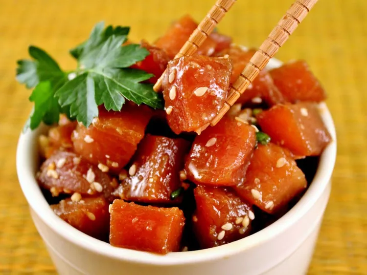

Ahi Tuna Poke Recipe

Description
Ever want sushi but in a bowl? You should try a Ahi Tuna Poke! It includes all the wonderful
flavors of sushi but in a bowl! Add whatever toppings you want! Learn how to make your own with this recipe!
Ingredients
- 2 pounds fresh tuna steaks, cubed
- 1 cup soy sauce
- ¾ cup chopped green onions
- 2 tablespoons sesame oil
- 2 tablespoons finely chopped macadamia nuts
- 1 tablespoon toasted sesame seeds
- 1 tablespoon crushed red pepper (Optional)
Steps
- Place tuna in a medium non-reactive bowl. Add soy sauce, green onions, sesame oil, sesame seeds,
macadamia nuts, and red pepper flakes; mix well. Cover and refrigerate at least 2 hours before serving.